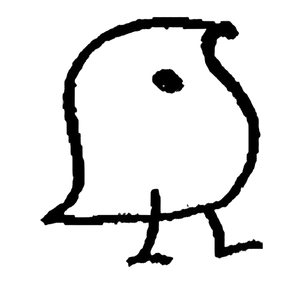

Learn Faster.
Unlock your learning potential.
A research-driven concept for a language learning platform designed to enhance learning outcomes by leveraging flow. Integrating adaptive deep learning models and tDCS technology, this project offers a novel approach to personalized, neuroscience-backed language learning.
